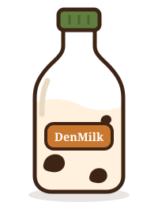

Tersedia setiap hari
Susu Murni Segar
Rp12.000 / liter
- Diperah pagi dan sore setiap hari, lalu langsung dijual
- Pembelian 5 liter ke atas bisa COD sore hari di Purwokerto
- Panaskan dulu sebelum diminum dan simpan di lemari es